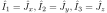
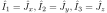
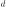

Next: Evaluating results - Graphical Up: Dynamical Susceptibility and Excitations Previous: DMD - formalism Contents Index
Physical observables are related to operators such as the magnetic moment components or the scattering operators. We now
introduce a series
of observables
(
 )
for each subsystem
)
for each subsystem
 and define a corresponding correlation function and
dynamical susceptibility. The correlation function we denote as
and define a corresponding correlation function and
dynamical susceptibility. The correlation function we denote as

Note that the observables
 may have some  dependence (for example if we
consider the Fourier transform of a magnetisation density of
a magnetic ion in a crystal [56]). We
omit this dependence to make notation easier but will come back to it when considering
the calculation of the neutron scattering cross section.
may have some  dependence (for example if we
consider the Fourier transform of a magnetisation density of
a magnetic ion in a crystal [56]). We
omit this dependence to make notation easier but will come back to it when considering
the calculation of the neutron scattering cross section.
Using the fluctuation-dissipation theorem
 can be related to a dynamical susceptibility
can be related to a dynamical susceptibility  :
:
However, in contrast to the dynamical susceptibility
 , based
on the operators
, based
on the operators
 ,
the susceptibility
,
the susceptibility
 cannot be obtained from solving the MF–RPA equation (266).
The reason is that the derivation of (266)
makes use of the dynamical evolution of the operators
and not of the observables
.
cannot be obtained from solving the MF–RPA equation (266).
The reason is that the derivation of (266)
makes use of the dynamical evolution of the operators
and not of the observables
.
Nonetheless, general properties of dynamical susceptibilities may be used
to get a relation between
 and
and
 .
In general a dynamical susceptibility
.
In general a dynamical susceptibility
 describes the response of
a physical observable
describes the response of
a physical observable
 to a perturbation of the system described by
an operator
to a perturbation of the system described by
an operator  .
In the case of the dynamical susceptibility corresponding to the observables
.
In the case of the dynamical susceptibility corresponding to the observables
 we therefore have to set
we therefore have to set
 with the definitions
with the definitions
 |
(265) | |||
 |
(266) |
From linear response theory it can be shown [1, page 143], that the dynamical
susceptibilities have poles at the excitation energies of the system: In equation (256)
the denominator, the eigenstates and the difference in thermal population are the same for any susceptibility.
The energy eigenstates
 of the system will be a linear combination of
direct products involving
single ion states.
Therefore, the numerator in equation (256) will
be a (usually not known) linear combination of products of the form
of the system will be a linear combination of
direct products involving
single ion states.
Therefore, the numerator in equation (256) will
be a (usually not known) linear combination of products of the form
 and
and
 for
for
 and
and
 , respectively.
, respectively.
These terms can be related by a similar procedure to that outlined in equations (270) ff. We define the matrices,
similar to the
 of equation (270), however, omitting the
thermal population factors and expectation values. These matrices
can be diagonalised using the
unitary transformations
of equation (270), however, omitting the
thermal population factors and expectation values. These matrices
can be diagonalised using the
unitary transformations
 (
(
 )
and
)
and
 (
(
 ), respectively.
), respectively.
Again, all eigenvalues are zero except for
 and
and  , respectively.
, respectively.
In [39] these transformations are used to derive the following expression for the dynamical susceptibility
Equation (287) shows how knowledge of the dynamical susceptibility calculated
on the basis of the interaction operators between subsystems (
 )
may be used to obtain the dynamical susceptibility for any set of observables
of
the system.
)
may be used to obtain the dynamical susceptibility for any set of observables
of
the system.
The standard procedure to avoid divergences is to substitute  with
with
 and
take the limit for
and
take the limit for
 . Using Dirac's formula
. Using Dirac's formula
the absorptive part of the dynamical susceptibility (280) becomes
When using the program mcdisp with option -X'observable', e.g. -Xpel,
the coefficients of the  -function in (289) are evaluated (note these
have the unit of the observable squared) and output into output file results/mcdisp.qeX'obserable'.
-function in (289) are evaluated (note these
have the unit of the observable squared) and output into output file results/mcdisp.qeX'obserable'.
The correlation function
 can be evaluated by applying the
fluctuation dissipation theorem (279):
can be evaluated by applying the
fluctuation dissipation theorem (279):
To keep notation simple, the dependence of the eigenvectors
 and the energies
and the energies  has been omitted.
If the observable
depends explicitly on , then also
has been omitted.
If the observable
depends explicitly on , then also
 and thus
will depend on .
This very fundamental result will be applied to the neutron scattering cross section
in section M.
and thus
will depend on .
This very fundamental result will be applied to the neutron scattering cross section
in section M.
The elastic contribution to equations (289) and
(290) has to be evaluated taking into account
a small but finite value for the energy shift  introduced
in the discussion of equation (267). It turns
out, that  and
and  and thus also
the dynamical matrix
and thus also
the dynamical matrix  and its eigenvalues
are proportional to . Making use of the normalisation
for the eigenvectors
and its eigenvalues
are proportional to . Making use of the normalisation
for the eigenvectors
 we find that the dynamical susceptibility (289)
is proportional to and thus zero in the limit of
we find that the dynamical susceptibility (289)
is proportional to and thus zero in the limit of
 . However, in the correlation function
(290) the denominator is proportional to
leading to a finite result for the quasielastic response.
. However, in the correlation function
(290) the denominator is proportional to
leading to a finite result for the quasielastic response.


![$\displaystyle
\left (X_{\alpha\beta}^{ss'}\right )''({\mathbf Q},\omega)\equiv
...
...)-
{\left ( X_{\alpha\beta}^{ss'}({\mathbf Q},\omega) \right )^{\ast}}
\right]
$](img1901.svg)